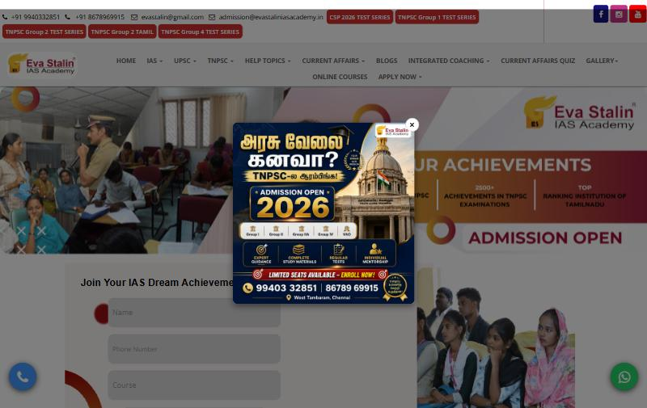
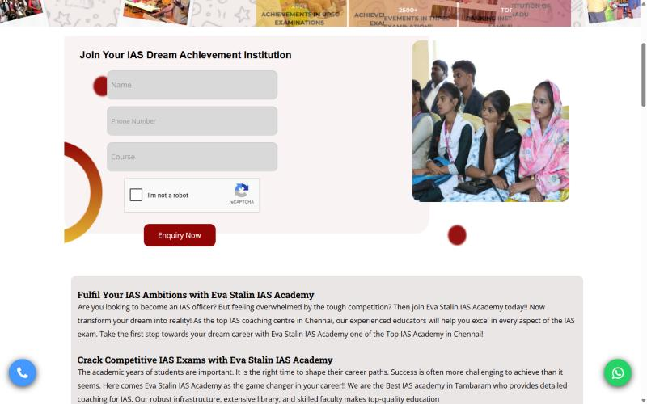
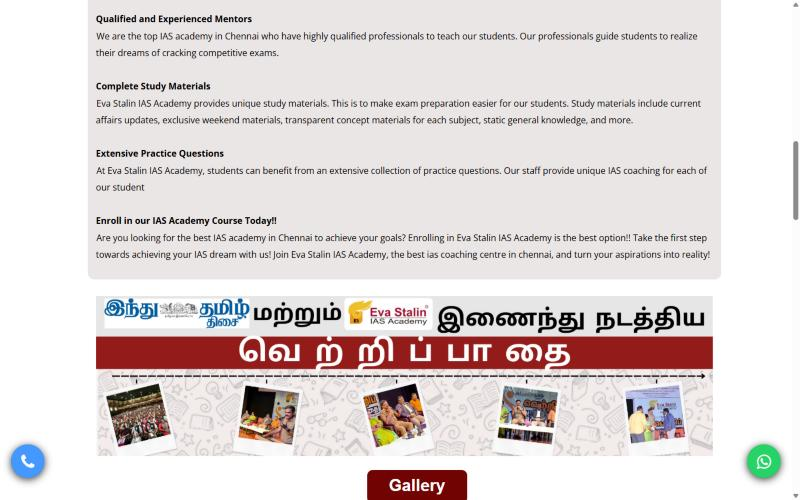
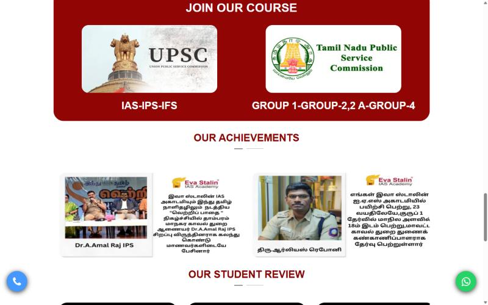
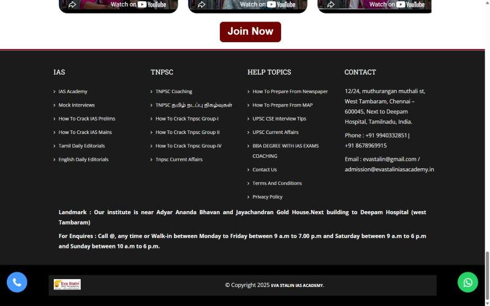
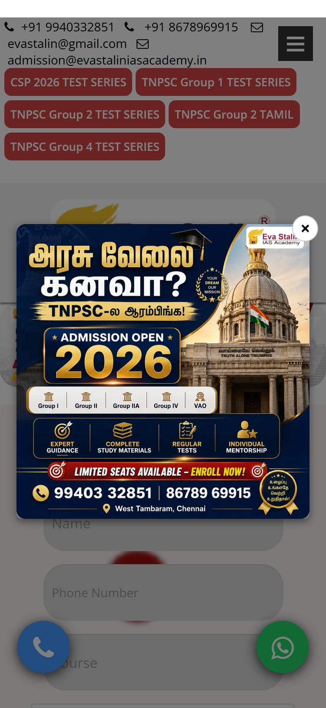
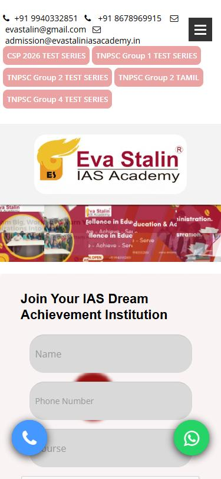
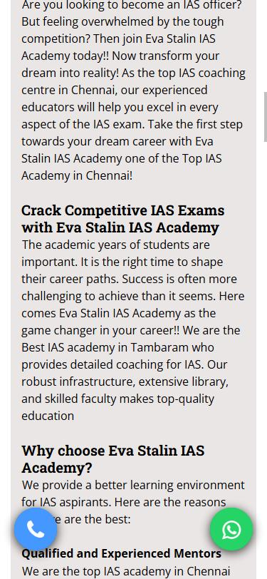

1Initial observations & discussion goals
From a preliminary review of the public-facing website, the academy appears to have several useful admissions assets: a clear Chennai (West Tambaram) location, UPSC and TNPSC programmes, integrated degree programmes, test series, a large bilingual current-affairs library, student video reviews, and working phone and WhatsApp contact options.
An initial design opportunity is to make these assets easier to discover and act on. The observations below should be discussed with the academy and confirmed before they are treated as final requirements. A visitor arriving on the homepage first sees an admission popup, a two-line menu with 12 items, and banner images whose messages are baked into the picture. Programme information is spread across pages whose menu labels do not match their content. There are no dedicated pages for courses, faculty or results. Five or more different enquiry forms collect different details. On a phone, the first screen is taken up almost entirely by contact text and test-series buttons before the logo appears.
This is a preliminary review of the publicly accessible website to support the first meeting. No source code, hosting, CMS, analytics or Tag Manager access has been provided. No changes have been made to the live website, and no forms were submitted. Findings and recommendations will be validated with the academy before the scope is finalised.
2Current public-facing website overview
The public-facing website shows signs of using Bootstrap and jQuery, and a slider-style hero. The public sitemap appears to contain a large collection of URLs, including current-affairs and blog content. The underlying backend, CMS, source-code structure and hosting setup have not been verified; these must be confirmed with the academy or its current developer.
Current structure (from the live menu)
| Menu item | Sub-items and where they actually lead |
|---|---|
| Home | Homepage |
| IAS | "IAS Academy" → page titled Historical Perspective; "Mock Interviews" → Event List; "How to crack IAS Prelims" → Event Detail; "How to crack IAS Mains" → Mains guide |
| UPSC | 6 sub-items (About, Eligibility, Age Limit, Jobs, Prelims Syllabus, Mains Syllabus), all linking to the same page (upsc.php) |
| TNPSC | 6 sub-items, all linking to tnpsc.php; plus TNPSC Coaching, Tamil current affairs and three "How to crack Group I / II / IV" guides |
| Help Topics | Newspaper preparation, Map preparation, UPSC interview tips |
| Current Affairs | UPSC daily / monthly; TNPSC Tamil / English / monthly ("TNPSC Daily Current Affairs" has no link) |
| Blogs | Blog listing |
| Integrated Coaching | BBA Degree + UPSC coaching; B.Com Degree + CA coaching |
| Current Affairs Quiz | Quiz page (same title and heading as the UPSC current affairs page) |
| Gallery | Gallery, Eminent Visitors, College Visits, Press Release |
| Online Courses | No destination (link is "#") |
| Apply Now | Student Application (stand-alone form page), Scholarship Form (stand-alone form page) |
Homepage section order today
Top contact bar and five test-series buttons → menu → admission popup → banner slider (4 images) → enquiry form (name, phone, course, reCAPTCHA) → long introductory text in grey boxes → "Vetri Paathai" event banner → gallery and course highlights lists → "Join our course" (UPSC, TNPSC) → "Our achievements" (two image cards) → three YouTube student reviews → footer.
What works well and should be kept
- Click-to-call and WhatsApp buttons on every page, with a pre-filled WhatsApp message.
- Address, landmark and opening hours on every page, and a Google Map on the Contact page.
- A large Tamil and English current-affairs and preparation-guide library (valuable for search and for returning visitors).
- Integrated degree programmes (BBA + UPSC, B.Com + CA), which set the academy apart.
- HTTPS, canonical tags, unique page titles and meta descriptions on most pages, Open Graph tags, an XML sitemap, a valid robots.txt, and Google Tag Manager, Analytics and Google Ads tags.
3Initial observations & improvement opportunities
The following are preliminary observations from the public-facing website, grouped by potential impact on enquiries and trust. They are not a source-code or backend audit. Items should be confirmed with the academy before being treated as final requirements. Each finding is labelled: Confirmed observed or measured during this audit · Opportunity a design judgement for discussion · Not verified could not be fully tested.
| # | Page | Problem | Evidence | Severity | Recommendation |
|---|---|---|---|---|---|
| 1 | Home (desktop & mobile) | An admission popup opens on every page load and covers the hero and menu. On mobile it fills the entire screen. Confirmed | Fig. A, Fig. E | High | Replace with an inline admissions banner in the hero, or a small, dismissible bar that appears after the visitor scrolls and remembers when it was closed. |
| 2 | Global navigation | 12 top-level items wrap onto two lines at 1440px. Several labels lead to unrelated pages (e.g. "IAS Academy" → Historical Perspective). 12 sub-items point to just two pages, and "Online Courses" goes nowhere. Confirmed | Fig. A; link audit in §2 | High | Reorganise into 6–7 exam-led sections (see §8). Every label must match its destination. |
| 3 | Home, mobile | The first mobile screen shows contact text and five test-series buttons. The logo only appears after them, and the hero banner shrinks to a thin strip whose text cannot be read. Confirmed | Fig. E, Fig. F | High | Use a compact sticky header (logo, call, menu) with a text-based hero sized for mobile, and move the test series into the menu and a homepage section. |
| 4 | Home | The hero messages ("Admission open", achievement figures) exist only inside four PNG images totalling ≈3.0 MB. Search engines and screen readers cannot read them, and they are illegible on phones. Confirmed | File sizes measured: 1,079 KB, 744 KB, 464 KB, 764 KB | High | Use one real headline, a supporting line and two buttons as HTML text over a single optimised photograph (WebP/AVIF, target <200 KB). |
| 5 | Site-wide forms | At least five different forms collect different details. The home form has a free-text "Course" box. The popup asks for email and a typed captcha. The contact form has no phone field. The test-series form asks for city. No form has visible labels (placeholders only). Text errors: "Comemnts", "Sent A Message", "Permenent". Confirmed Submission and delivery Not verified. | Field audit of each form | High | One short enquiry component (name, mobile, programme drop-down, optional preferred callback time) reused everywhere, with visible labels, inline validation and a clear thank-you message with the next step. |
| 6 | Apply Now → Student Application | A 40+ field form on a page with no site header, footer or way back. Course options ("TNPSC, Banking, TET") don't match the courses advertised elsewhere, and gender is a binary choice. Confirmed | Field audit | Medium | Keep the full application as step 2, after an enquiry. Place it inside the site layout and split it into short steps. Course options should come from the programme list. |
| 7 | Missing pages | There is no About, Faculty, Results or Courses page. URLs such as /about.php or /results.php show the homepage with a "200 OK" status, and unknown URLs redirect to the homepage. Confirmed | HTTP checks | High | Create these pages with academy-verified content, and return a proper 404 page for unknown URLs. |
| 8 | Home, performance | The homepage loads ≈5.4 MB of images with no lazy loading (0 of 15 images), 43 scripts and 18 stylesheets (84 requests). Bootstrap and jQuery are each loaded twice, and three YouTube players load immediately. Confirmed Core Web Vitals scores Not verified. | Browser resource audit; image sizes via direct download | High | Compress and resize images, lazy-load anything below the first screen, use lightweight video thumbnails that load the player on tap, and remove duplicate libraries. |
| 9 | Home, content | Long, repetitive SEO-style paragraphs ("best IAS academy in Chennai" appears repeatedly) in justified grey boxes. Achievements are images with Tamil text baked in. The page has an empty <h1>. Confirmed | Fig. C, Fig. D; heading audit | Medium | Rewrite as scannable sections with one clear H1. Present achievements as text cards with photo, name, exam, year and rank, only where the academy can verify them. |
| 10 | Mobile, all pages | The floating call and WhatsApp buttons cover body text while reading. Confirmed in a 375px emulator. | Fig. G | Medium | Use a slim bottom action bar (Call · WhatsApp · Enquire) with page padding so it never covers content. |
| 11 | Global, typography | Open Sans, Roboto Slab and Arial are mixed, with inconsistent heading styles, centred and justified text, and decorative circles and red dots overlapping the form. Opportunity | Fig. B, Fig. C | Medium | Define one type scale and one bilingual font family (see §7). |
| 12 | Accessibility | Form fields have no labels. Image alt text is generic or repeated ("evastaliniasacademy", "tnpsccoachingcentre3"). Mobile has 22 tap targets under 32px tall. Confirmed Full colour-contrast and keyboard audit Not verified. | DOM audit | Medium | Aim for WCAG 2.1 AA basics: labels, meaningful alt text, 44px tap targets, visible focus states and contrast checks. |
| 13 | SEO hygiene | Two WebSite schema blocks with different names ("Eva Stalin IAS Academy" / "IAS ACADEMY"). The quiz page duplicates another page's title and heading. http:// takes two redirects to reach the final URL. Confirmed | Source and redirect checks | Low | Use a single Organization/EducationalOrganization schema, unique titles for every page, and a single-hop redirect. |
| 14 | Footer | The text "For Enquires : Call @, any time" is broken, the copyright still reads 2025, and the bold justified text is hard to read. Confirmed | Fig. H | Low | Restructure the footer: contact block, hours table, quick links by exam, social links and legal links. |
| 15 | Mobile menu | In emulation, the slide-out menu opened as a narrow, clipped panel on one attempt and did not stay open on another. Not verified on real devices. | Emulator only | Medium | Test on real Android and iOS devices before the redesign. The new design will specify a full-height accessible menu. |
4Alignment & responsive design issues
The public-facing website was reviewed at a 1440 × 900 desktop viewport and a 375 × 812 emulated mobile viewport. These observations are directional only; they have not been validated on real devices or with the site source code. Numbered markers point to the areas for discussion below.

1 2 3 4- The contact bar and test-series pills wrap onto two rows, so the header looks crowded.
- 12 menu items wrap onto a second line, with "Online Courses" and "Apply Now" stranded below.
- The admission popup covers the hero on every visit.
- The hero is a collage image with key text cut by the slider. The message depends on the picture.

1 2 3- A decorative red dot overlaps the Name field.
- Placeholder-only fields, and "Course" is free text, not a choice.
- A decorative arc clips the form edge, and the form and photo are not vertically aligned.

1 2- Dense, repetitive paragraphs in a grey box with no visual hierarchy.
- An important event message ("Vetri Paathai", with Hindu Tamil Thisai) exists only as an image.

1 2- Only two broad course cards (UPSC, TNPSC) with no duration, mode, batch or next step.
- Achievement cards are images with small Tamil text, which is hard to read and can't be indexed.

1 2- "Call @, any time": the phone number is missing from the sentence, and the hours are hard to scan.
- The copyright year is out of date.
Mobile (375px emulated)

1 2 3- Contact text and five large buttons use roughly a quarter of the screen before the logo.
- The popup covers the logo, hero and form.
- Floating buttons overlap the form fields.

1 2 3- The desktop banner is scaled down to a thin strip, and its text can't be read.
- The logo sits in its own large block below the contact text and five buttons. A compact header would bring the hero and enquiry action into view.
- The floating call and WhatsApp buttons cover the enquiry fields.

1 1- The call and WhatsApp buttons sit over paragraph text while reading.
5Current UX & conversion opportunities
A typical visitor is a UPSC or TNPSC aspirant (or a parent), often on a phone, often arriving from Google or an ad. The site needs to answer four questions quickly: Is this academy credible? Do they have a programme for my exam? What are the batch, mode and next steps? How do I talk to them?
| Visitor question | What happens today | Opportunity |
|---|---|---|
| "Is this academy credible?" | Achievement claims sit inside banner images. There are no faculty or results pages, only three video reviews. | A dedicated Results page and a Faculty page, plus a homepage proof strip, all using academy-verified names, photos, exams and years. |
| "Do they have a course for my exam?" | Two generic course cards. Programme details are spread across information pages (upsc.php, tnpsc.php, coaching.php). | An exam-led course finder (UPSC · TNPSC Group 1 · Group 2/2A · Group 4 · Integrated degree · Test series) linking to one page per programme. |
| "What are the batches, mode and fees?" | Not visible on the pages reviewed. | A standard "key facts" panel on each programme page: duration, mode, medium, next batch, and fees or a "request fee details" option. Content to be supplied by the academy. |
| "How do I talk to them?" | Call and WhatsApp are always visible (good), but there are five or more forms with different fields, and the popup interrupts. | One enquiry form, a bottom action bar on mobile, a programme-specific WhatsApp message, and a clear confirmation screen. |
| Returning learners (current affairs) | Large library, but split by daily/monthly, Tamil/English and UPSC/TNPSC across separate menus. | One "Free Resources" hub with filters (exam, language, date), plus a soft enquiry or test-series prompt on each article. |
Tracking: GTM, Google Analytics and a Google Ads conversion tag are present and must be preserved. Whether form submissions are currently tracked as conversions could not be verified without access to the tag manager. Not verified
6Competitor & design references
These references are for patterns only. Nothing will be copied, and statistics quoted by these sites belong to them.
| Reference | What it demonstrates | Pattern to adapt |
|---|---|---|
| Shankar IAS Academy Chennai · UPSC/TNPSC | Separate UPSC, TNPSC and Banking course columns, each with a "Know More" link; "Our Achievers" cards showing photo, rank and year; separate desktop and mobile hero banners; floating WhatsApp help. | Exam-led course columns; achiever cards as text, not images; banners designed separately for mobile. |
| Officers IAS Academy Chennai · UPSC | Named faculty with service background; a step-by-step preparation journey (foundation → testing → mentoring → mains → interview); an upcoming programmes table. | "Your preparation journey" section; an upcoming batches table; faculty profiles with credentials. |
| Vajiram & Ravi Delhi/Chennai · UPSC | Course cards with filter tabs (All, GS, Optional, Test Series); a free counselling form with programme and preferred-time drop-downs. | Filterable course grid; a short counselling form with a callback-time choice. |
| Drishti IAS Delhi · UPSC, bilingual | Large current-affairs library in mega-menus, plus fully parallel English and Hindi sites; enquiry asks for language preference. | A free-resources hub organised by exam and language; a Tamil/English preference in the enquiry form. |
| Vision IAS UPSC · test series | Test series organised by exam year, paper and medium, each with a start date and schedule link. | Test-series pages with a clear schedule and a "download schedule" action (replacing today's header pills). |
| IIT Madras BS programme Reputable education site | Clean programme landing page: hero with application deadline and a single Apply button, headline facts, highlights, then links to eligibility, fees and FAQs. | Programme page template: hero, key facts, who it's for, curriculum, FAQ, enquire. |
7Proposed redesign vision
"Credible, clear and close to home": a calm, professional academic look that keeps the academy's maroon-and-gold identity, puts verified proof first, and makes the next step obvious on any phone.
Brand presentation
- Keep the existing Eva Stalin logo and its gold mark. Request a vector (SVG) version from the academy so it stays sharp at every size.
- Use real photography of the West Tambaram campus, classrooms, library and events (much of this already exists in the gallery) instead of collages.
- Present Tamil and English with equal care. Tamil headlines should be live text, not images.
Colour palette (proposal)
Built from the colours already on the site, with a calmer neutral base. Final values will be checked for AA contrast.
Academy Maroon
#7A1420 · primary buttons, headings
Laurel Gold
#C8961E · accents, highlights
Ink
#1D2330 · body text
Paper
#FBFAF7 · page background
WhatsApp Green
WhatsApp actions only
Typography (proposal)
- Noto Serif / Noto Serif Tamil for headings: academic, authoritative, and matched in Tamil and English.
- Noto Sans / Noto Sans Tamil for body text and interface: highly legible on low-end phones, with consistent Tamil rendering.
- One type scale (for example 16px body, 20/24/32/40px headings), left-aligned text, and no justified paragraphs.
Navigation & information architecture
Reduce 12 top-level items to about 7: Courses · Test Series · Results · Faculty · Free Resources · About · Contact, with a persistent Enquire Now button. "Courses" opens a panel grouped by exam. On mobile: a sticky header (logo, call, menu) and a bottom action bar (Call · WhatsApp · Enquire).
Homepage section sequence
- Hero: a text headline such as "UPSC & TNPSC coaching in West Tambaram, Chennai" (final wording to be agreed), a one-line value statement, an Enquire Now button and a View Courses button, and the current admissions notice as a small badge.
- Course finder: cards for UPSC CSE, TNPSC Group 1, Group 2/2A, Group 4, the integrated BBA/B.Com programmes, and Test Series.
- Proof strip: verified results figures and named achievers, linking to the Results page. Pending client data
- Why Eva Stalin: 4–6 benefits drawn from existing content (mentoring, study materials, library and study hall, daily newspaper session, regular tests with post-test analysis).
- Preparation journey: Foundation → Prelims → Mains → Interview, with the matching programme at each step.
- Faculty highlights. Pending client data
- Student video reviews: the existing YouTube reviews as lightweight thumbnails.
- Free resources: latest current affairs in Tamil and English, the quiz, and exam guides.
- Events & media: Vetri Paathai, eminent visitors, college visits, press.
- Visit us: map, landmark, hours, call, WhatsApp, and a short enquiry form.
Course & programme pages
One reusable template: hero with exam name and Enquire button → key facts (duration, mode, medium, next batch, fees or "request fees") → who it's for and eligibility → what's included → syllabus/curriculum overview (reuse the existing syllabus content) → schedule and tests → faculty → results for this exam → FAQs → enquiry form with the programme pre-selected.
Faculty, results & testimonials
These sections will only show information the academy supplies and can verify: name, photo with consent, exam, year, rank or post, and a short quote. Claims currently shown in banner images (achievement counts and "top ranking" statements) need source details before they are reused.
Enquiry & conversion paths
- Primary: short enquiry (name, mobile, programme, preferred language/callback time) → confirmation page with what happens next, plus a WhatsApp option.
- Secondary: test-series schedule download, scholarship registration and full application, all inside the site layout.
- Always available: click-to-call and WhatsApp, with the message pre-filled to the page the visitor is viewing.
- Form submissions are tracked as conversions in the existing GTM/Ads setup (implementation phase).
Accessibility & performance targets
- WCAG 2.1 AA basics: labelled fields, meaningful alt text, 4.5:1 text contrast, 44px tap targets, keyboard and focus support, a correct heading order with one H1 per page.
- Homepage image weight from about 5.4 MB down to a target of under 1 MB, using WebP/AVIF, responsive sizes and lazy loading.
- Remove duplicate libraries and replace the slider plugin. Load YouTube on tap.
- Measure Lighthouse and Core Web Vitals before and after on mobile. Targets will be agreed once a baseline has been captured (see §11).
8Recommended sitemap & page structure
- Home
- Courses (hub)
- UPSC Civil Services (IAS/IPS/IFS): Foundation · Prelims · Mains · Interview / Mock Interviews
- TNPSC Group 1 · Group 2 & 2A · Group 4 VAO, Banking, TET: confirm with client
- Integrated: BBA + UPSC · B.Com + CA
- Online Courses confirm whether offered
- Test Series (hub): CSP 2026 · TNPSC Group 1 · Group 2 · Group 2 Tamil · Group 4
- Results & Achievements NEW client data
- Faculty NEW client data
- Free Resources (hub)
- Current Affairs: UPSC daily/monthly · TNPSC Tamil/English/monthly
- Current Affairs Quiz · Exam Guides (About UPSC, About TNPSC, syllabus, "How to crack" guides) · Preparation Tips (newspaper, maps, interview) · Blog
- About NEW: Our story · Campus & facilities · Events (Gallery, Eminent Visitors, College Visits, Press)
- Admissions: How to join · Scholarship · Application form
- Contact · Privacy Policy · Terms · 404 page NEW
| Page | Purpose | Key sections | Primary CTA |
|---|---|---|---|
| Home | Orient, build trust, route to a programme | See §7 sequence | Enquire Now / View Courses |
| Courses hub | Help visitors choose by exam | Filterable cards, comparison of key facts | View programme |
| Programme page (×8–10) | Answer everything about one programme | Key facts, eligibility, curriculum, schedule, faculty, results, FAQ | Enquire (programme pre-selected) |
| Test Series hub/page | Sell and schedule the test series | Schedule, format, how to join | Download schedule / Register |
| Results | Proof of outcomes | Filter by exam and year, achiever cards, video reviews | Talk to a counsellor |
| Faculty | Trust in teaching quality | Profiles, subjects, experience | Enquire |
| Free Resources | Search traffic and repeat visits | Filters (exam, language, date), latest items, quiz | Join test series / Enquire (soft) |
| About | The academy story and campus | Story, facilities (library, study hall, newspapers), events, press | Visit campus |
| Admissions | Explain how to join | Steps, documents, scholarship, application | Start application |
| Contact | Reach or visit | Map, landmark, hours, phones, emails, form | Call / WhatsApp |
Existing content: retain, reorganise, improve, review
| Action | Content |
|---|---|
| Retain | Current-affairs and blog articles (keep their URLs where possible); contact details, landmark and hours; YouTube reviews; map; privacy and terms pages; tracking tags. |
| Reorganise | UPSC/TNPSC information pages → Exam Guides; "How to crack" guides → Exam Guides; Gallery, Eminent, College, Press → About › Events; test series header pills → Test Series hub. |
| Improve | Homepage copy (shorter, scannable); course highlights lists → programme pages; achievement images → text cards; enquiry and application forms; footer; alt text and headings. |
| Review with client | Achievement figures and "top ranking" claims in banners; "Historical Perspective", "Event List" and "Event Detail" pages (currently under misleading labels); Online Courses; Banking/TET options in forms; popup campaign usage; residential programme mentioned on the TNPSC coaching page. |
9Proposed scope of work
This is a discussion draft, not a final statement of work. Final scope, timelines and pricing will be proposed after the first meeting and after the current technology, integrations, content needs and access requirements are understood.
A. Potential redesign priorities to discuss
- UI/UX redesign of the homepage and all key templates.
- Responsive layouts for desktop, tablet and mobile.
- Restructured navigation with labels that match their pages.
- A single enquiry form component, used everywhere.
- Preserving click-to-call, WhatsApp, map, GTM/GA/Ads tags, sitemap and existing article URLs.
- Basic accessibility, SEO hygiene (H1s, alt text, schema, 404) and image performance fixes.
- QA and responsive testing during implementation.
B. Recommendations requiring client approval
- New Results, Faculty, About and Courses hub pages (dependent on client content).
- Replacing the auto-popup with an inline admissions banner.
- A Free Resources hub with filters.
- Splitting the student application into steps.
- Updated colour palette and font family.
- Whether to retain the existing platform or consider another approach. This cannot be decided until the current stack and codebase are reviewed.
- Copywriting and new photography support.
Design system & components
Colour and type tokens; buttons; header and mega-menu; mobile header and bottom action bar; course card; programme key-facts panel; achiever card; faculty card; testimonial/video card; article card and filters; enquiry form with all states (empty, error, success); footer; 404 page.
10Deliverables & acceptance criteria
| Deliverable | Acceptance criteria |
|---|---|
| Approved sitemap & content inventory | Every existing page is mapped to retain, reorganise, improve or retire, and signed off by the academy. |
| Low-fidelity wireframes (home, course hub, programme, results, contact) | Section order and CTAs approved before visual design starts. |
| Visual design system | Colours pass WCAG AA contrast; Tamil and English type samples are approved; all components are documented with their states. |
| High-fidelity page designs: desktop (1440), tablet (768) and mobile (375) | Each agreed template is designed at all three widths; no horizontal scroll; tap targets ≥44px; the enquiry action is visible within the first mobile screen. |
| Clickable prototype | Covers visitor journeys: home → course → enquiry → confirmation; home → test series → schedule download. |
| Implementation handover notes | Lists integrations to keep (GTM, GA, Ads, reCAPTCHA or replacement, form email routing, WhatsApp, map, sitemap) and redirect needs. |
| QA checklist (implementation phase) | Tested on current Chrome, Safari, Firefox and Edge, plus real Android and iOS phones; forms deliver to the academy's inbox; conversions fire; Lighthouse is measured before and after. |
11Assumptions, dependencies & client questions
Audit limitations
- Preliminary review conducted on 24 Oct 2026 using a 1440px desktop viewport and a 375px emulated phone. Not tested: real phones, tablets, iOS Safari or other browsers.
- No forms were submitted, so email delivery, auto-replies and conversion tracking were not verified.
- Google PageSpeed/Lighthouse scores could not be retrieved (API quota). Performance findings come from measured file sizes and request counts, not lab scores.
- Pages were reviewed through the menu, footer and direct URL checks. Not all 483 sitemap URLs were reviewed individually.
- No access has been provided to hosting, the CMS/source code, Google Analytics, Search Console or Tag Manager. Therefore, backend architecture, form delivery, integrations, tracking and implementation complexity remain unverified.
- Claims shown on the site (achievement counts, rankings) were not independently verified and are not repeated as fact in this proposal.
Dependencies
- Verified results data, faculty profiles, photos and consent from the academy.
- Programme details: duration, mode, medium, batch dates and fee policy.
- Logo source files (vector) and any brand guidelines.
- Read access to Analytics, Search Console and Tag Manager for a baseline.
- If the project proceeds, suitable hosting and codebase access for the technical discovery and implementation phase.
Questions for the academy
- Which programmes are currently offered? (UPSC stages, TNPSC groups, VAO, Banking, TET, integrated degrees, online courses?)
- Can you share verified results (name, exam, year, rank/post) and permission to publish them?
- What is the source for the banner figures and the "top ranking institution" statement?
- Who are the faculty members we can feature?
- Should fees be shown publicly, or handled through "request fee details"?
- Where should enquiries go (email, CRM, WhatsApp Business), and who follows up?
- How important is the admission popup to current campaigns? Would an inline banner be acceptable?
- Should the site be fully bilingual (Tamil and English), or English with Tamil content sections?
- Is there a residential programme (mentioned on the TNPSC coaching page)?
- Are there other locations or online batches to include?
12Recommended next steps & approval process
- Discovery meeting: understand the academy’s goals, audience, current challenges, priorities and expectations.
- Requirements and access discussion: confirm current programmes, enquiry workflows, content ownership and which technical or analytics access may be available if the project moves forward.
- Scope and sitemap proposal: prepare a refined sitemap, priorities and deliverables for approval.
- Design direction: after scope approval, develop wireframes and visual concepts for review.
- Implementation proposal: once requirements and technical constraints are understood, provide the recommended build approach, timeline and commercials separately.